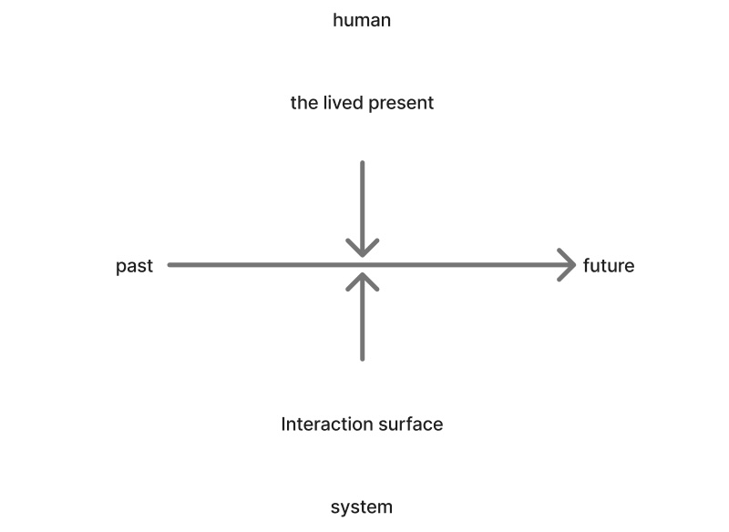

First Post: The Story That Wouldn’t Stay Simple
For the first 40 plus year of my life, I didn't think much about my personal health. Even though for a few years I was an allied health care provider I didn't worry much about my own health. I'd eat chips and salsa for lunch, or sometimes just straight up chocolate chips out of the bag. I did ride my bike to work, figuring that would balance out my crappy diet...
... well, that was until I got a fairly abrupt wakeup call.
It started with a single subtle symptom: occasional shortness of breath during my bike commute to work. Not dramatic. Not consistent. Just enough to notice. A couple months later an a wellness checkup at my doctor's office I mentioned the symptom to a resident. After briefly going back into that secret doctor space where doctor's do whatever it is that they do back there, he came back suggested a treadmill stress test “just to be safe.”
I rode my bike uphill to the hospital for my treadmill test. I was sure I was fine.
I passed. No problem...
... but then I got a call with the doc who gave me the tredmill test on the phone explaining that something in the results was ambiguous and they wanted additional imaging, a profusion study. In retrospect, perhaps I should have been more alarmed at this point. I've since learned that it is never a good sign when you get a call from an actual doctor.
That eventually led to a cardiac catheterization procedure that didn’t go as expected, followed by bypass surgery. Yikes!! that's not supposed to happen when you are 43 and feel healthy.
Insert an image here of a guy getting help getting out of bed hugging a heart pillow.
Years later, after another health scare, I found myself dealing not with a medical crisis but with an insurance authorization problem.
Those experiences didn’t feel connected at first.
One was about symptoms. Another about clinical judgment. Another about medical imaging. Another about administrative systems.
But over time, I started realizing they were all part of the same larger story.
Not a story about a single doctor, technology, or decision.
A story about humans and systems interacting over time.
The more I reflected on it, the more I found myself thinking about healthcare through two dimensions:
- human ↔ system
- past ↔ future
Very roughly:
- Humans, both patients and physicians, bring experience, training, judgment, fears, and habits into the present moment.
- Systems bring workflows, representations, rules, and embedded logic into that same mindful moment.
- Together, they shape my life, our lives.
A simplified version looks something like this:

This framing has become increasingly important to me as I think about healthcare technology and AI.
AI is often discussed as though intelligence can simply be added to healthcare from the outside. But healthcare has never really worked as isolated intelligence. Outcomes emerge through interactions between people, systems, tools, and time.
Patients vary. Doctors vary too, often more than we or they would wish to admit. Systems fail in ordinary ways. Technologies surface some information while hiding other information, with what is and is not surfaced to us humans impacting what we do and think next.
And yet, most of the time, enough overlapping layers work together to keep us safe and healthy.
This series is an attempt to unpack those layers.
Over the next several posts, I’ll use my own experience with heart disease to explore:
- what humans bring into healthcare interactions
- what systems bring into them
- how future outcomes are shaped
- and how this is evolving with AI
For now, I’ll leave you with the fuller version of the framework I’ve been working from.